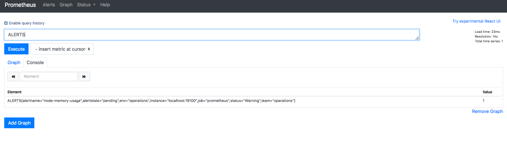
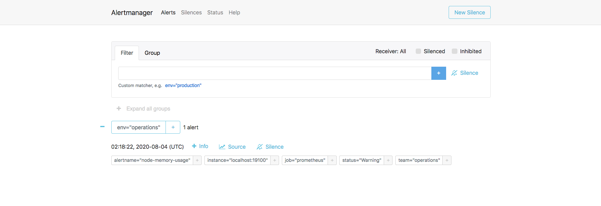
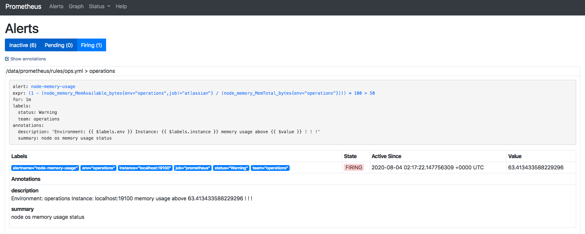

Rules详解（一）
本章主要对如何使用Prometheus与Alertmanager组件集成关联，并对警报规则
Rules及其模板内容进行详细讲解。
与Alertmanager集成¶
Prometheus把产生的警报发给Alertmanager进行处理时，需要在Prometheus使用的配置文件中添加关联Alertmanager的组件的对应配置信息。
alerting:
alert_relabel_configs:
[ - <relabel_config> ... ]
alertmanagers:
[ - <alertmanager_config> ... ]
# alertmanagers 为 alertmanager_config 数组，配置范例：
alerting:
alert_relabel_configs: # 动态修改 alert 属性的规则配置。
- source_labels: [dc]
regex: (.+)\d+
target_label: dc1
alertmanagers:
- static_configs:
- targets: ['127.0.0.1:9093'] # 单实例配置
#- targets: ['172.31.10.167:19093','172.31.10.167:29093','172.31.10.167:39093'] # 集群配置
- job_name: 'Alertmanager'
# metrics_path defaults to '/metrics'
# scheme defaults to 'http'.
static_configs:
- targets: ['localhost:19093']上面的配置中的 alert_relabel_configs是指警报重新标记在发送到Alertmanager之前应用于警报。 它具有与目标重新标记相同的配置格式和操作，外部标签标记后应用警报重新标记，主要是针对集群配置。
这个设置的用途是确保具有不同外部label的HA对Prometheus服务端发送相同的警报信息。
Alertmanager 可以通过 static_configs 参数静态配置，也可以使用其中一种支持的服务发现机制动态发现，我们上面的配置是静态的单实例，针对集群HA配置，后面会讲。
此外，relabel_configs 允许从发现的实体中选择 Alertmanager，并对使用的API路径提供高级修改，该路径通过 __alerts_path__ 标签公开。
完成以上配置后，重启Prometheus服务，用以加载生效，也可以使用前文说过的热加载功能，使其配置生效。然后通过浏览器，访问 http://192.168.1.220:19090/alerts 就可以看 inactive pending firing 三个状态，没有警报信息是因为我们还没有配置警报规则 rules。
警报规则¶
警报规则 rules 使用的是 yaml 格式进行定义，在Prometheus中通过我们前面讲过的 PromQL 配置实际警报触发条件，Prometheus 会根据设置的警告规则 Ruels 以及配置间隔时间进行周期性计算，当满足触发条件规则会发送警报通知。
警报规则加载的是在 prometheus.yml 文件中进行配置，默认的警报规则进行周期运行计算的时间是1分钟，可以使用 global 中的 evaluation_interval 来决定时间间隔。
范例：
global:
evaluation_interval: 15s警报规则可以指定多个文件，也可以自定到自定义的目录下面，为了管理更为便捷，方便阅读，可以把警报规则拆成多分，用以区分环境，系统，服务等，如：prod，test，dev 等等，并且支持以正则表达式定义。
范例：
rule_files:
#- "/data/prometheus/rules/*.yml" # 正则表达式，会加在此目录下所有警报规则配置文件
- "/data/prometheus/rules/ops.yml" # 仅加载ops.yml警报规则文件
#- "/data/prometheus/rules/prod-*.yml"
#- "/data/prometheus/rules/test-*.yml"
#- "/data/prometheus/rules/dev-*.yml"现在开始讲告警规则 Rules 的定义，格式为YAML。
groups:
- name: <string>
rules:
- alert: <string>
expr: <string>
for: [ <duration> | default 0 ]
labels:
[ <lable_name>: <label_value> ]
annotations:
[ <lable_name>: <tmpl_string> ]| 参数 | 描述 |
|---|---|
- name: <string> |
警报规则组的名称 |
- alert: <string> |
警报规则的名称 |
expr: <string |
使用PromQL表达式完成的警报触发条件，用于计算是否有满足触发条件 |
<lable_name>: <label_value> |
自定义标签，允许自行定义标签附加在警报上，比如high warning |
annotations: <lable_name>: <tmpl_string> |
用来设置有关警报的一组描述信息，其中包括自定义的标签，以及expr计算后的值。 |
groups:
- name: operations
rules:
- alert: node-down
expr: up{env="operations"} != 1
for: 5m
labels:
status: High
team: operations
annotations:
description: "Environment: {{ $labels.env }} Instance: {{ $labels.instance }} is Down ! ! !"
value: '{{ $value }}'
summary: "The host node was down 20 minutes ago"以上就是一个完整 Rules 的配置，如果Prometheus 在周期检测中使用PromQ以env=operations为维度查询，如果当前查询结果中具有标签operations，且返回值都不等于1的时候，发送警报。
对于写好的 Rules 可以是常用 promtool 来检车 ruls.yml 的书写格式是否正确。
/usr/local/bin/promtool check rules /data/prometheus/rules/ops.yml
Checking /data/prometheus/rules/ops.yml
SUCCESS: 7 rules found对于修改好的rules文件，保存以后，经过检测没有问题，直接重新热加载 Prometheus就可以在页面看到了。对于触发警报规则，比较简单了，直接修改运算值或者去停掉 node-exporter 服务，便可在界面看到警报信息。一个告警在生命周期会有三种状态
| 状态 | 描述 |
|---|---|
Inactive |
正常状态，未激活警报 |
Pending |
已满足触发条件，但没有满足发送时间条件，此条件就是上面rules范例中的 for 5m 子句中定义的持续时间 |
Firing |
满足条件，且超过了 for 子句中的的指定持续时间5m |
带有for子句的警报会，当触发以后会先转换成Pending状态，然后在转换为Firing状态。这里需要俩个周期才能触发警报条件，如果没有设置for子句，会直接从Inactive状态转换成Firing状态，直接触发警报。
在运行过程中，Prometheus会把Pending或Firing状态的每一个告警创建一个 Alerts指标名称，这个可以通过Rules来触发警报测试，直接在UI中Graph查看指标 ALERTS，格式如下：
ALERTS{alertname="alert name",alertstate="pending|firing",<additional alert label>}

当警报处于激活状态 Pending 或者 Firing时候，如上图所示，样本值为1。其他状态为0。则不显示。上图已经触发警报，其警报已经被转发给Alertmanager组件，此时可以在浏览器上通过可以用过9093端口访问，查看警报状态。

现在我们来说一下整理下Prometheus从收集监控指标信息到触发警报的过程
| 状态 | 描述 |
|---|---|
1.定义规则 |
在Prometheus配置中，scrape_interval: 15s，默认是1分钟，这个定义是收集监控指标信息的采集周期，同时配置对应的警报规则，可以是全局，也可以单独为某一个metrics定义 |
2.周期计算 |
对于表达式进行计算时，Prometheus中的配置中配置了 evaluation_interval: 15s，默认也是一分钟，为警报规则的计算周期，evaluation_interval 只是全局计算周期值。 |
3.1警报状态转换(pending) |
当首次触发警报规则条件成立，表达式为 true，并且没有满足警报规则中的for子句中的持续时间时，警报状态切换为 Pending |
3.2警报状态转换(firing) |
若下一个计算周期中，表达式仍为 true，并且满足警报规则中的for子句的持续时间时，警报状态转换为 Firing，即为 active，警报会被Prometheus推送到ALertmanager组件 |
3.3警报状态转换(period) |
如果在 evaluation_interval 的计算周期内，表达式还是为 true，同时满足 for子句的持续时间，持续转发到Alertmanager，这里只是转发状态到Alertmanager，并不是直接发送通知到指定通知源 |
3.4警报状态转换(resolve) |
只到某个周期，表达式 为 false，警报状态会变成 inactive ，并且会有一个 resolve被发送到Alertmanager，用于说明警报故障依解决，发送resolve信息需要自己单独在Alertmanager中定义 |
使用模板¶
模板是在警报中使用时间序列标签和值展示的一种方法，可以用于警报规则中的注释（annotation）与标签（lable）。模板其实使用的go语言的标准模板语法，并公开一些包含时间序列标签和值的变量。这样查询的时候，更具有可读性，也可以执行其他PromQL查询 来向警报添加额外内容，ALertmanager Web UI中会根据标签值显示器警报信息。
{{ $lable.<lablename>}} 可以获取当前警报实例中的指定标签值
{{ $value }} 变量可以获取当前PromQL表达式的计算样本值。
groups:
- name: operations
rules:
# monitor node memory usage
- alert: node-memory-usage
expr: (1 - (node_memory_MemAvailable_bytes{env="operations",job!='atlassian'} / (node_memory_MemTotal_bytes{env="operations"})))* 100 > 90
for: 1m
labels:
status: Warning
team: operations
annotations:
description: "Environment: {{ $labels.env }} Instance: {{ $labels.instance }} memory usage above {{ $value }} ! ! !"
summary: "node os memory usage status"调整好rules以后，我们可以使用 curl -XPOST http://localhost:9090/-/reload 或者 对Prometheus服务重启，让警报规则生效。
这个时候，我们可以把阈值调整为 50 来进行故障模拟操作，这时在去访问UI的时候，当持续1分钟满足警报条件，实际告警状态已转换为 Firing，可以在 Annotations中看到模板信息 summary 与 description 已经成功显示。

需要注意的是，一个稳定的Prometheus监控系统中，要尽量使用模板化，这样会降低性能开销（Debug调试信息等），同时也易于维护。
下面网站收录了当前大部分的rules规则，大家可以对应自己的环境，配置相关服务的Rules。